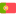

<link rel="stylesheet" href="https://fonts.googleapis.com/css2?family=Material+Symbols+Outlined:opsz,wght,FILL,GRAD@20..48,100..700,0..1,-50..200" />

<ion-header [translucent]="true">
  <ion-toolbar>
    <ion-buttons slot="start">
    <ion-button (click)="logout()">
      <ion-icon slot="icon-only" name="log-out"></ion-icon>
    </ion-button>
  </ion-buttons>
      <div class="temas">
        <div>
      <p>
        </p> 
      <p class="textAbajo">
        <span class="material-symbols-outlined">
          {{tema}}
        </span>
       </p>
      </div>
      </div>  
  </ion-toolbar>
</ion-header>


<ion-content>
  <div class="ion-padding">
    <!-- <ion-card class="ion-card"> -->
     <!-- </ion-card> -->
     <ion-tabs>
    </ion-tabs>
    
    <ion-fab slot="fixed" horizontal="end" vertical="bottom">
      <ion-fab-button>
        <ion-icon name="build-outline"></ion-icon>
      </ion-fab-button>
      <ion-fab-list side="top">
        <ion-fab-button (click)="cambiarPestana('numeros')">
          <i class="material-symbols-outlined">
            looks_two
          </i>
        </ion-fab-button>
        <ion-fab-button (click)="cambiarPestana('colores')">
          <i class="material-symbols-outlined">
            palette
          </i>
        </ion-fab-button>
        <ion-fab-button (click)="cambiarPestana('animales')">
          <i class="material-symbols-outlined">
            pets
          </i>
        </ion-fab-button>
      </ion-fab-list>
      
      <ion-fab-list side="start">
        <ion-fab-button (click)="cambiarIdioma('español')">
          <!-- <ion-icon name="chevron-back"></ion-icon> -->
          
        </ion-fab-button>
        <ion-fab-button (click)="cambiarIdioma('ingles')">
          
        </ion-fab-button>
        <ion-fab-button (click)="cambiarIdioma('portuges')">
          
        </ion-fab-button>
      </ion-fab-list>
    </ion-fab>
  </div>
</ion-content>


